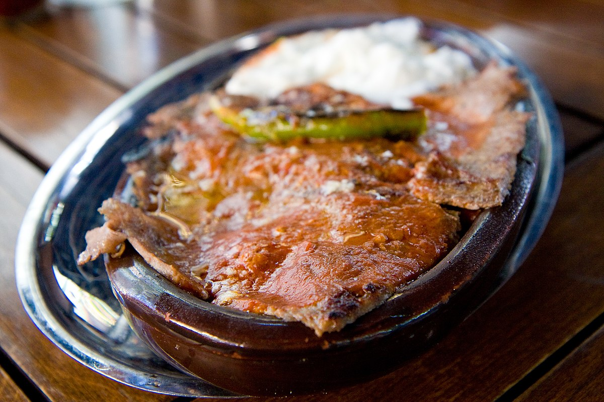

ISKENDER

Description
Iskender kebap is one of the most famous meat foods of northwestern Turkey and takes its name from its inventor, Iskender Efendi, who lived in Bursa in the late 19th century. The dish is made from thinly cut grilled lamb or beef basted with hot tomato sauce over pieces of pita bread and generously slathered with melted sheep butter and yogurt.
Ingredients
- 1 kg of doner kebab
- 1/2 loaf of pita bread
- 1/2 cup of butter
- 1 cup of yogurt
- 1/2 cup of tomato sauce
- 1/2 cup of water
- 1/2 teaspoon of salt
- 1/2 teaspoon of pepper
Steps
- Preheat the oven to 200 degrees.
- Place the pita bread on the bottom of the oven tray.
- Place the doner kebab on top of the pita bread.
- Put the tray in the oven and bake for 10 minutes.
- Meanwhile, melt the butter in a saucepan.
- Add the tomato sauce, water, salt, and pepper to the saucepan and cook for 5 minutes.
- Take the tray out of the oven and pour the sauce over the doner kebab.
- Put the tray back in the oven and bake for another 5 minutes.
- Take the tray out of the oven and pour the yogurt over the doner kebab.
- Iskender kebab is ready to serve.